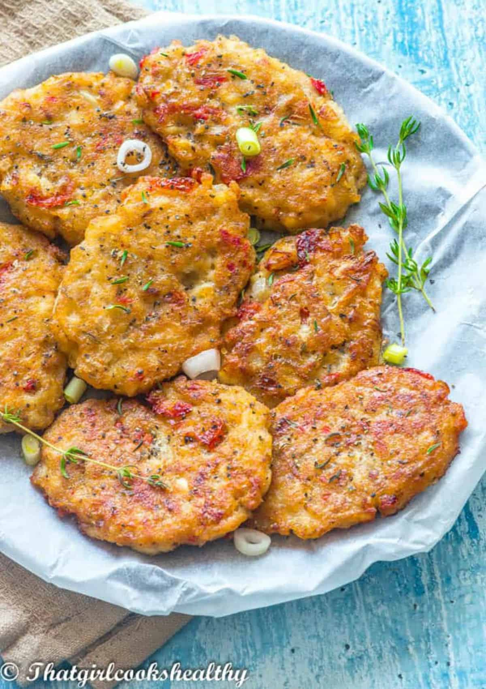

<!DOCTYPE html>
<html lang="en">
<head>
    <meta charset="UTF-8">
    <meta http-equiv="X-UA-Compatible" content="IE=edge">
    <meta name="viewport" content="width=device-width, initial-scale=1.0">
    <title>Saltfish Fritters</title>
</head>
<body>
    
</body>
</html><h1> Saltfish Fritters</h1>


<h2 class=""> Descripition </h2>
<p>Jamaican Saltfish Fritters recipe aka Bajan bakes in Barbados! However as we come from a Jamaican background they are Saltfish Fritters. The sight and smell always make our senses glitter!  They are that good! Nothing beats coming downstairs for breakfast or a family gathering to the sight of these bad boys on the dining table. Crispy, succulent and easy to make! You’ll love them. Give it a try!
</p>

<div> 
    <h3> Ingriedient</h3>
    <ul>
        <li>250ml water</li>
        <li> 1 pack boneless Saltfish </li>
        <li>Spring onions </li>
        <li>1 small Tomato chopped </li>
        <li>1 medium Onion</li>
        <li>1 cup sweet peppers</li>
        <li>1/4 of Scotch bonnet pepper</li>
        <li>1/2 Tsp Baking powder</li>
        <li>2 cups water</li>
        <li> 4 cups plain flour</li>
        <li>1 Tsp Black pepper</li>
        <li>1 Tsp Paprika</li>
        <li>4oz Olive</li>
    </ul>
</div>

<div> 
    <h4> Instructions</h4>
    <ol>
        <li> Saltfish in water let it boil for 10 mins (or soak saltfish in cold water overnight) </li>
        <li> Then drain off water and repeat 1 or 2 times (removes salt) </li>
        <li> Add Spring onions, chopped tomato, onion, sweet peppers, Scotch bonnet pepper, 1/2 Tsp Baking powder into mixing bowl </li>
        <li>Pour 2 cups of water into bowl </li>
        <li>Pour 4 cups plain flour then mix (add water or flour when necessary untill mix has slightly sloppy consistency</li>
        <li>Add 1 Tsp Black pepper </li>
        <li>Add 1 Tsp Paprika </li>
        <li> Add 4oz Olive or vegetable oil in frying pan, on high heat</li>
        <li>Add mix to high heat frying pan, then turn down to medium heat. Fry until golden brown on each side.</li>
    </ol>
</div>
<div>
    <p> <a href="saltfish_fritters.html"> Return to the top</a> </p>
</div>

<div> 
    <p> <a href="index.html"> Homepage</a></p>
</div>